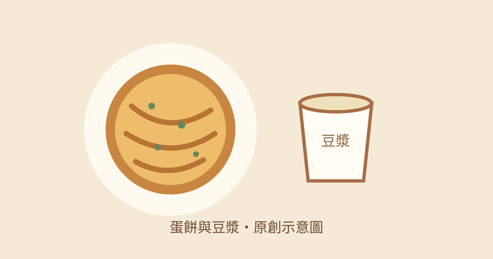

趙先生吃飯｜上海蛋餅豆漿大王：三重現桿蛋餅

收藏重點
趙先生吃飯介紹三重早餐店的手工現桿蛋餅，作者形容餅皮厚實、表面微酥，搭配蔥蛋與特製辣椒醬油；另有港式蘿蔔糕與豆漿。口感、排隊速度與推薦均為作者個人用餐經驗，非現況保證。
店家與查核
查核時間：2026-11-04 21:11，台灣時間。Google 地圖是獨立維護的商家資料，非店家即時公告。
- 店名：上海蛋餅豆漿大王，地圖與原文一致。
- 地址：新北市三重區三寧街2號；地圖另列過田里及郵遞區號241，門牌與原文一致。
- 電話：02-8982-5177，地圖與原文一致；未實際致電。
- 營業時間：原文稱 03:30–12:00。地圖查核時僅顯示週四03:30開始營業，開店時間與原文相符；收店時間、其他日子及公休日未能獨立確認，不能推定每日皆營業。
- 交通：原文稱捷運菜寮站步行約5分鐘，並非實測。
上述資料可能變動；前往前請致電確認營業、臨時公休及供應情況。
原文價格，非現價保證
原文發布與更新日期為 2026-10-28，記載豆漿及豆漿紅茶各20元；未獨立確認現價，價格與品項以店家現場為準。
圖片與來源
封面為原創示意插畫，不是店家照片。原文代表照片已作私人保存；因未查得可公開再利用授權，不公開鏡像或重製，僅附原文連結。作者的40年店齡說法亦未獨立查證。